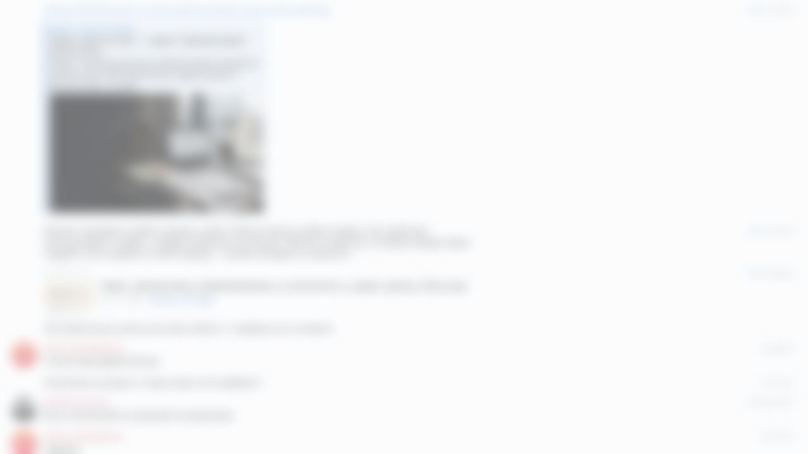

А+
Сайт временно недоступен
Лендинг и чат-консультант отключены. Публикация будет восстановлена после отдельного решения.

Работы приостановлены из-за отсутствия обратной связи со стороны заказчика.
Лендинг и чат-консультант отключены. Публикация будет восстановлена после отдельного решения.

Работы приостановлены из-за отсутствия обратной связи со стороны заказчика.